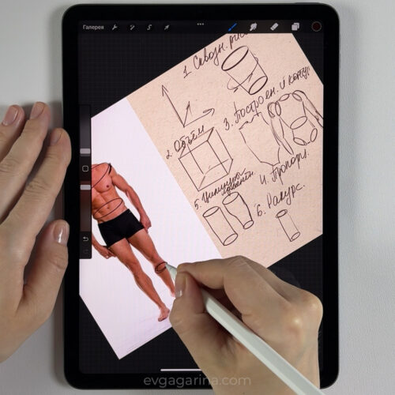
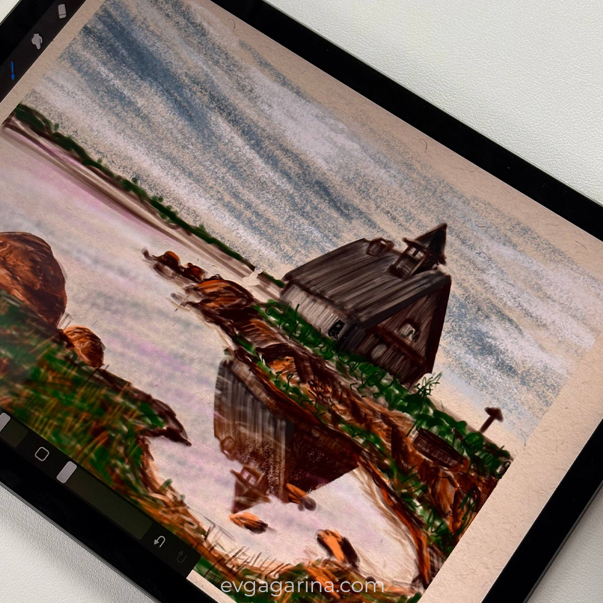
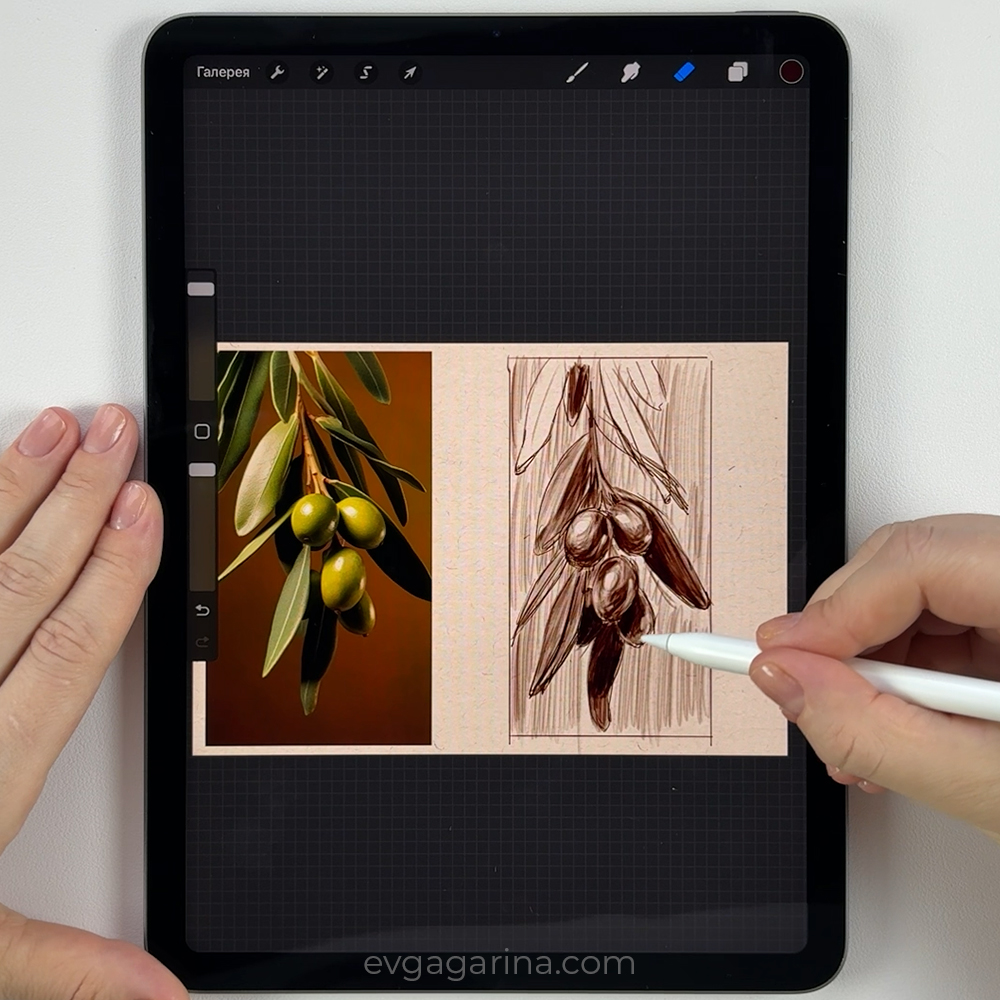
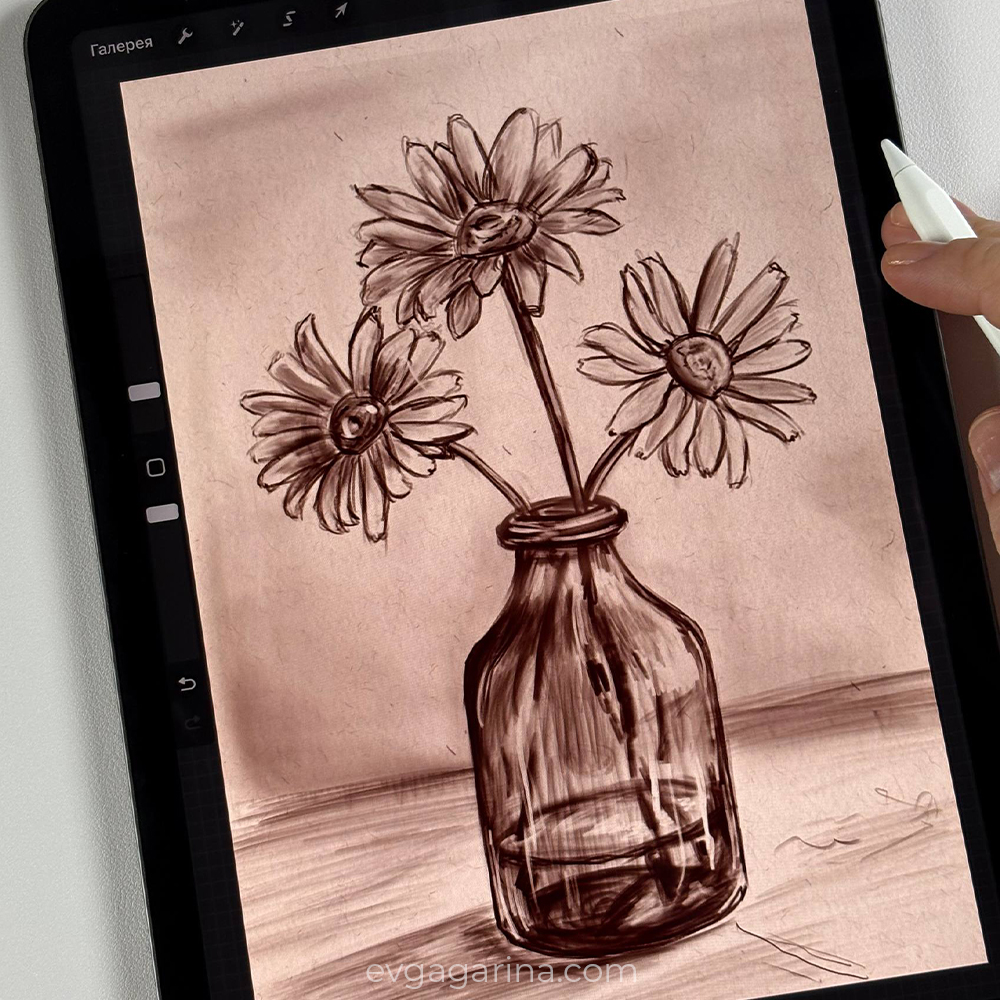

Основы рисования в Procreate
Форма и объём, перспектива, светотень, цвет, композиция и фигура человека — всё, что нужно, чтобы начать уверенно рисовать на iPad.
Скидка действует до 12 июня включительно

- Время обучения
- ~1 неделя
- Объём курса
- 30 уроков
- Консультации
- Бесплатно
- Доступ к курсу
- Навсегда
Программа
Все базовые правила рисования за 30 уроков
Каждый блок — это отдельный навык. Мы идём последовательно: от простого к сложному, чтобы к концу курса вы могли собрать полноценную работу.
Форма и объём
Строим объекты от простых геометрических форм к сложным, чувствуем массу и пространство.
Перспектива
Линейная и воздушная перспектива, работа с горизонтом и точками схода.
Светотень
Свет, тень, полутень и рефлексы — как объём рождается из освещения.
Теория цвета
Цветовой круг, гармонии и настроение, работа с палитрами в Procreate.
Композиция
Основные правила построения кадра, ритм, баланс и акценты в работе.
Фигура человека
Базовые пропорции, построение и движение человеческой фигуры.
Работы курса
Что вы научитесь рисовать
Примеры работ, которые ученики создают в процессе обучения — от простых этюдов до законченных иллюстраций.



Что входит
Всё для практики — в одном курсе
Вы получаете не только уроки, но и рабочие материалы: кисти, исходники, текстуры и референсы. Всё, чтобы сразу начать рисовать.
- Все базовые правила рисования в Procreate
- Построение формы и объектов
- Теория цвета и гармония
- Основы композиции
- Перспектива и светотень
- Фигура человека
- 30 уроков в личном кабинете
- Авторский набор кистей Procreate
- Готовые исходники со слоями в Procreate
- 20 текстур холстов большого размера
- 45 референсов для практики
- Чат учеников и обратная связь
Стоимость
Начните рисовать уже сегодня
Скидка действует до 12 июня включительно
- 30 уроков и доступ навсегда
- Кисти, исходники и текстуры
- 45 референсов для практики
- Обратная связь и чат учеников
После оплаты доступ к урокам открывается в личном кабинете
Частые вопросы
Нет. Курс построен с нуля — мы начинаем с самых основ, поэтому подойдёт даже тем, кто впервые взял в руки Apple Pencil.
iPad с приложением Procreate и стилус (Apple Pencil или совместимый). Все кисти, текстуры и исходники входят в курс.
Доступ к курсу остаётся у вас навсегда. Вы можете проходить уроки в удобном темпе и возвращаться к ним в любой момент.
Да. Есть чат учеников и бесплатные консультации — вы сможете задавать вопросы и получать разбор своих работ.
После оплаты уроки открываются в личном кабинете. По вопросам оплаты напишите нам на почту — поможем оформить доступ.